Ce chapitre vous accompagne pas à pas, de la création de votre compte jusqu'à votre première connexion. Comptez une dizaine de minutes.
Avant de commencer
Préparez ces informations. Seules celles marquées « obligatoire » sont indispensables : les autres peuvent être ajoutées plus tard.
Information
Obligatoire ?
Où la trouver
Une adresse mail que vous consultez
Oui
Vous allez y recevoir un code. Gardez votre boîte mail ouverte (sur l'ordinateur ou sur votre téléphone).
L'adresse et le code postal de l'exploitation
Oui
—
Le nom de l'exploitation
Oui
—
Votre numéro de phytolicence
Non, mais conseillé
Sur votre phytolicence. Vous pouvez la consulter sur phytolicence.be avec votre carte d'identité (lecteur de carte) ou itsme, ou y demander une copie en PDF par mail.
Votre numéro d'exploitant
Non
Si vous en avez un. À confirmer : de quel numéro s'agit-il (SIGeC, BCE) ?
Votre numéro de TVA
Non
Si vous n'en avez pas, laissez le champ vide.
Où commencer ?
Ouvrez Appi'Field dans votre navigateur (Chrome, Edge, Firefox ou Safari). La page d'accueil propose trois boutons :
Me créer un compte : vous n'avez pas encore de compte. C'est ce que nous faisons dans ce chapitre.
Me connecter : vous avez déjà un compte (voir « Se connecter » plus loin).
Me connecter avec WalleSmart : vous utilisez le portail WalleSmart (voir la fin du chapitre).
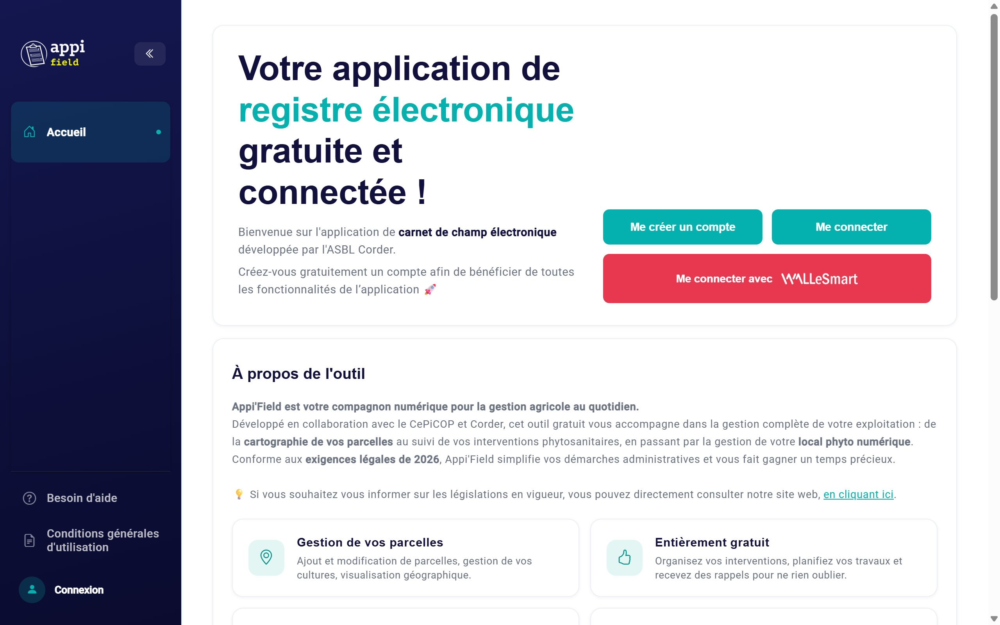
La page d'accueil, avant connexion.
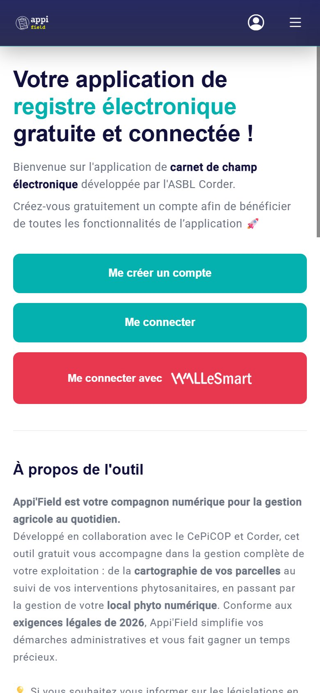
La même page sur smartphone.
L'inscription se fait en 3 étapes : créer le compte, valider votre adresse mail, puis compléter les informations de votre exploitation.
Étape 1 : créer votre compte
Cliquez sur Me créer un compte (ou, depuis la page de connexion, sur Créer un compte gratuitement).
Remplissez tous les champs marqués d'une étoile rouge* (voir le tableau ci-dessous).
Cochez la case « En me créant un compte, je consens aux conditions générales d'utilisation ». Le lien bleu permet de les lire.
Cliquez sur S'inscrire. Le bouton affiche « Inscription en cours… » : patientez quelques secondes.
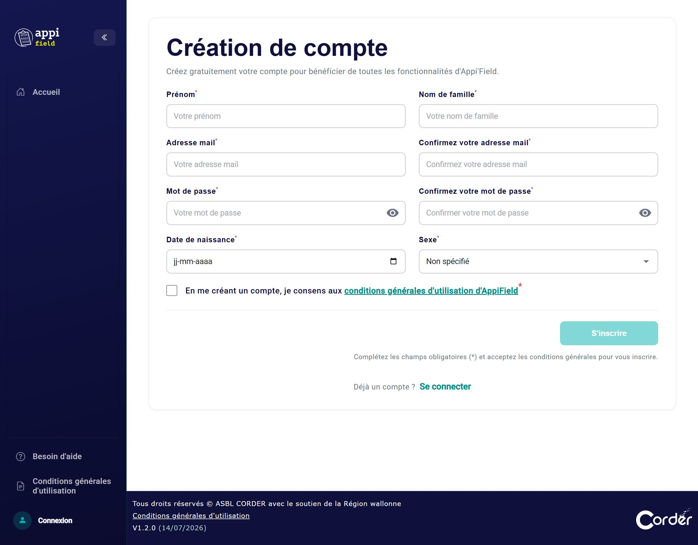
Le formulaire de création de compte. Les champs marqués d'une étoile rouge sont obligatoires.
Les champs du formulaire
Champ
Ce qu'il faut mettre
Prénom* Nom de famille*
Votre prénom et votre nom. Ils s'affichent dans l'application (« Bienvenue, Marie ! »).
Adresse mail*
L'adresse qui vous servira à vous connecter. Elle doit avoir la forme nom@exemple.be. Les majuscules n'ont pas d'importance.
Confirmez votre adresse mail*
Retapez exactement la même adresse. C'est une vérification contre les fautes de frappe.
Mot de passe*
Au moins 8 caractères, dont 1 chiffre et 2 caractères spéciaux. Voir l'encadré ci-dessous.
Confirmez votre mot de passe*
Retapez exactement le même mot de passe.
Date de naissance*
Tapez-la sous la forme jour-mois-année, ou cliquez sur le petit calendrier à droite du champ.
Sexe*
Homme, Femme ou « Non spécifié » (choix par défaut, accepté).
Choisir un mot de passe accepté
Dès que vous cliquez dans le champ Mot de passe, une petite liste apparaît. Chaque règle passe au vert ✓ quand elle est respectée, et reste en rouge ✗ sinon.
Les lettres accentuées (é, è, à…) et le signe € ne comptent pas comme caractères spéciaux.
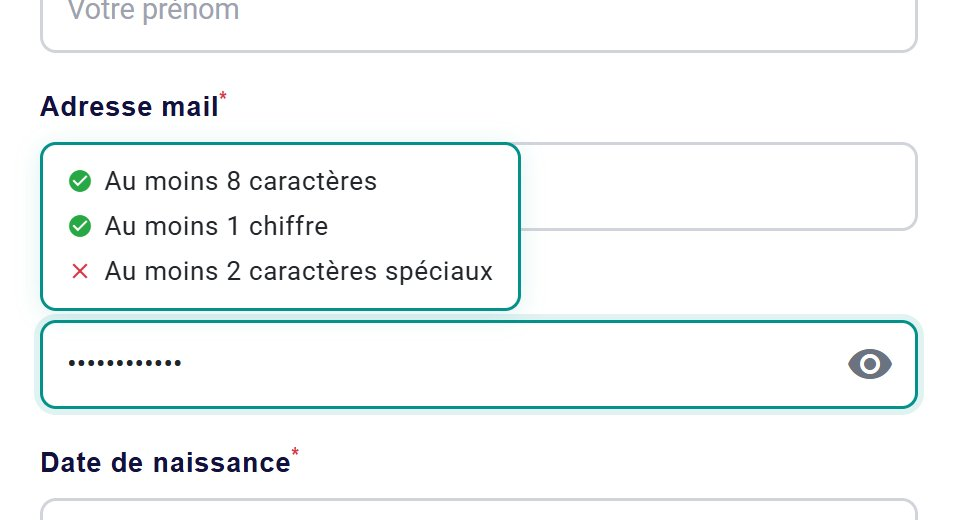
Ici, il manque encore deux caractères spéciaux.
Une méthode simplePrenez un mot facile à retenir, ajoutez une année et deux signes, par exemple sur le modèle « Motfacile + 4 chiffres + deux signes ». N'utilisez pas l'exemple d'un guide tel quel, et ne donnez votre mot de passe à personne.
Voir ce que vous tapezL'icône en forme d'œil, à droite du champ, affiche le mot de passe en clair. Cliquez à nouveau pour le masquer.
Si quelque chose ne va pas
Tant qu'une information manque ou est incorrecte, le bouton S'inscrire reste pâle et ne réagit pas. Un message rouge sous le champ concerné vous dit quoi corriger :
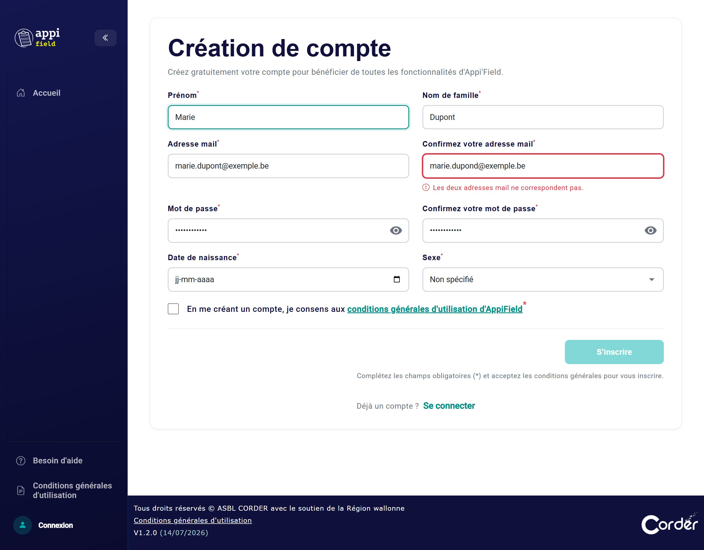
Les deux adresses mail ne sont pas identiques : le champ est entouré de rouge.
Message affiché
Que faire ?
« Champ obligatoire. »
Remplissez ce champ.
« Adresse mail invalide (ex. : nom@exemple.be). »
Vérifiez qu'il y a bien un @ et un point, sans espace.
« Les deux adresses mail ne correspondent pas. »
Retapez l'adresse de confirmation, lettre par lettre.
« Les deux mots de passe ne correspondent pas. »
Retapez le mot de passe de confirmation. Utilisez l'œil pour comparer.
« La date de naissance ne peut pas être dans le futur. »
Vérifiez l'année.
« Complétez les champs obligatoires (*) et acceptez les conditions générales pour vous inscrire. »
Un champ est vide, ou la case des conditions générales n'est pas cochée.
« Complétez correctement les champs obligatoires (*) pour vous inscrire. »
Tout est rempli, mais une règle n'est pas respectée : le plus souvent, le mot de passe.
« Un compte existe déjà pour cette adresse »Ce message s'affiche sur la page de connexion quand votre adresse mail est déjà inscrite. Vous avez donc déjà un compte : votre adresse est déjà remplie, tapez simplement votre mot de passe. Si vous ne connaissez plus votre mot de passe, utilisez Mot de passe oublié (voir plus loin).
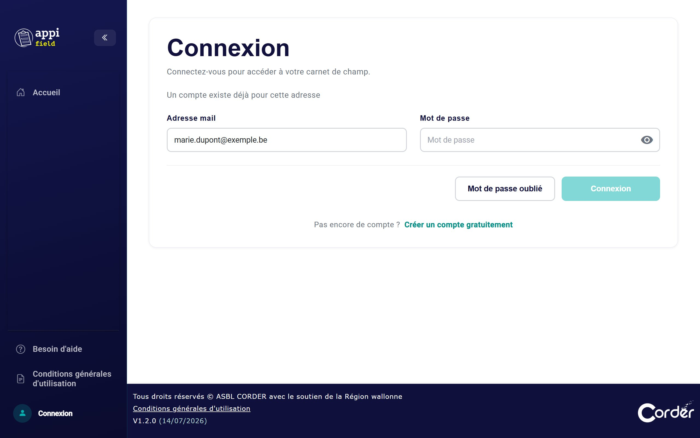
Le message quand l'adresse est déjà inscrite.
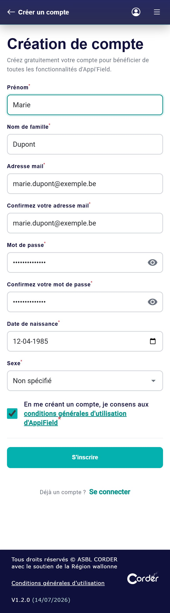
Sur smartphone : tout est rempli, le bouton « S'inscrire » est actif.
Étape 2 : valider votre adresse mail
Après S'inscrire, Appi'Field vous envoie un code de validation par mail, et affiche la page « Confirmez votre inscription ».
Sans fermer Appi'Field, ouvrez votre boîte mail (dans un autre onglet, ou sur votre téléphone).
Ouvrez le mail d'Appi'Field et repérez le code.
Revenez dans Appi'Field, tapez le code dans le champ Code de validation, puis cliquez sur Valider mon compte.
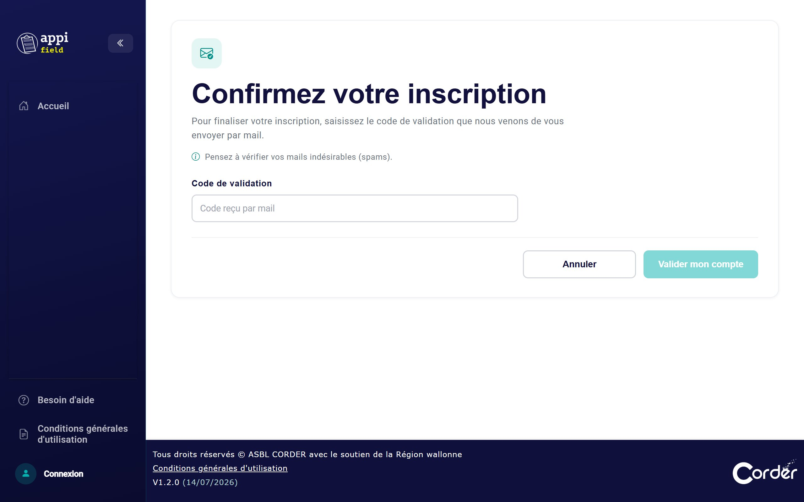
La page où taper le code reçu par mail.
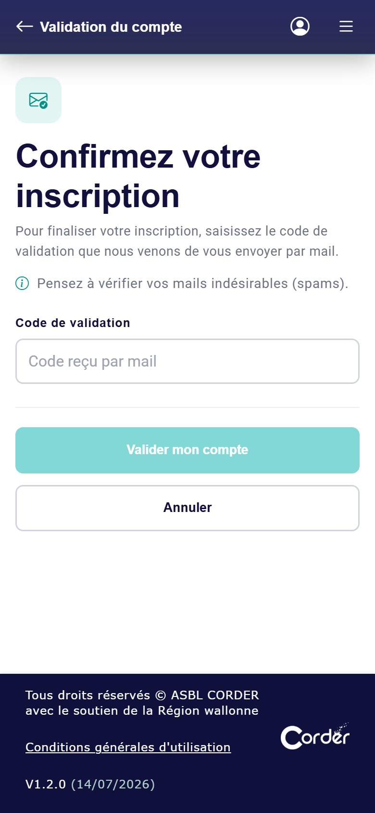
Le code est valable 1 heurePassé ce délai, il ne fonctionne plus. Cette page n'a pas de bouton pour renvoyer un code : recommencez simplement l'inscription (étape 1) avec la même adresse mail pour en recevoir un nouveau.
Pas de mail ?Regardez dans le dossier Courrier indésirable (ou « Spam »). Vérifiez aussi que l'adresse tapée à l'étape 1 était la bonne. Si le code est refusé, un message vous prévient : vérifiez qu'il n'y a pas d'espace en trop et que vous utilisez le code du dernier mail reçu.
Dans la plupart des cas, vous passez directement à l'étape 3. Parfois, Appi'Field affiche : « Votre email a été validé ! Veuillez maintenant vous re-connecter pour finaliser la création de votre compte. » Cliquez sur OK, puis connectez-vous avec votre adresse mail et votre mot de passe : vous arrivez à l'étape 3.
Étape 3 : finaliser votre inscription
Cette dernière page demande les informations de votre exploitation.
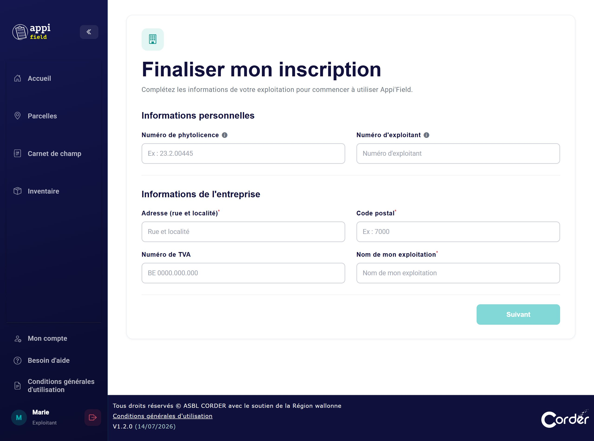
La page « Finaliser mon inscription ».
Champ
Obligatoire ?
Ce qu'il faut mettre
Numéro de phytolicence
Non
Tapez seulement les chiffres : les points s'ajoutent tout seuls (ex. 23.2.00445). Vous pouvez le laisser vide si vous utilisez uniquement des produits qui ne demandent pas de phytolicence.
Numéro d'exploitant
Non
« Dans le cas où vous en avez un. » À confirmer
Adresse (rue et localité)
Oui
L'adresse du siège de l'exploitation, ex. « Rue des Tilleuls 8, Gembloux ».
Code postal
Oui
Un code postal belge : 4 chiffres, ex. 5030.
Numéro de TVA
Non
Tapez seulement les chiffres : « BE » et les points s'ajoutent tout seuls. Pas de TVA ? Laissez vide.
Nom de mon exploitation
Oui
Le nom de votre ferme ou de votre entreprise.
Pourquoi indiquer votre phytolicence ?Votre numéro de phytolicence et votre numéro d'exploitant sont repris sur chaque ligne du registre que vous exporterez. Mieux vaut les indiquer dès maintenant. Vous pourrez les ajouter ou les corriger plus tard dans Mon compte.
Cliquez sur Suivant. Le bouton affiche « Enregistrement… », puis vous arrivez sur l'accueil de votre exploitation : votre compte est prêt.
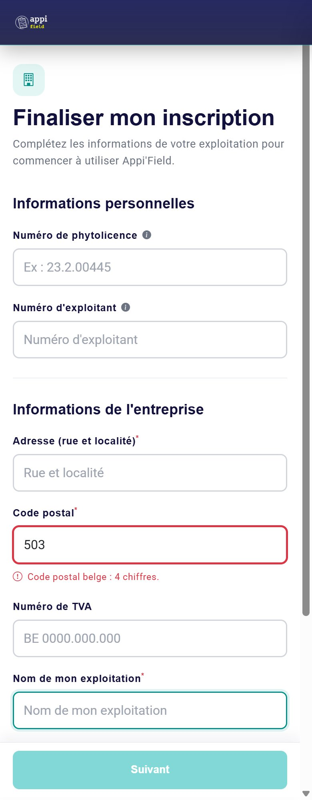
Un code postal incomplet : le champ est entouré de rouge.
Si quelque chose ne va pas
Message
Que faire ?
« Champ obligatoire. »
Remplissez ce champ.
« Code postal belge : 4 chiffres. »
Tapez 4 chiffres, sans lettre ni espace.
« L'enregistrement n'a pas abouti. Vérifiez votre connexion puis réessayez. »
Vérifiez votre connexion internet, puis cliquez à nouveau sur Suivant.
Sur smartphonePendant cette étape, la barre du bas est masquée et le bouton Suivant reste collé en bas de l'écran.
Vous avez fermé la page avant de finir ?Pas de souci : à votre prochaine connexion, vous arriverez directement sur l'accueil, et l'application ne vous redemandera pas ces informations. Complétez-les vous-même dans Mon compte › Informations de mon exploitation et Informations personnelles (chapitre 12).
Juste après l'inscription : ajoutez votre équipe
Au moment d'encoder un traitement, Appi'Field vous demandera qui l'a réalisé (l'« opérateur »). La liste des opérateurs est vide au départ, même pour vous : ajoutez-vous, ainsi que toute personne qui traite sur votre exploitation.
Sur l'accueil, descendez jusqu'à l'encadré Mon équipe (ou cliquez sur le raccourci Mon équipe).
Cliquez sur Nouvel opérateur.
Tapez le nom et prénom* et, si la personne en a une, son numéro de phytolicence.
Cliquez sur Enregistrer.
La phytolicence de l'opérateurElle n'est pas obligatoire pour encoder, mais elle apparaît dans le registre exporté, à côté du nom de l'opérateur (« Marie Dupont (23.2.01234) »). Indiquez-la si la personne en a une.
Se connecter
Sur la page d'accueil, cliquez sur Me connecter (sur ordinateur, vous pouvez aussi cliquer sur Connexion en bas du menu de gauche ; sur smartphone, sur l'icône de profil en haut à droite).
Tapez votre adresse mail et votre mot de passe.
Cliquez sur Connexion. Vous arrivez sur l'accueil de votre exploitation.
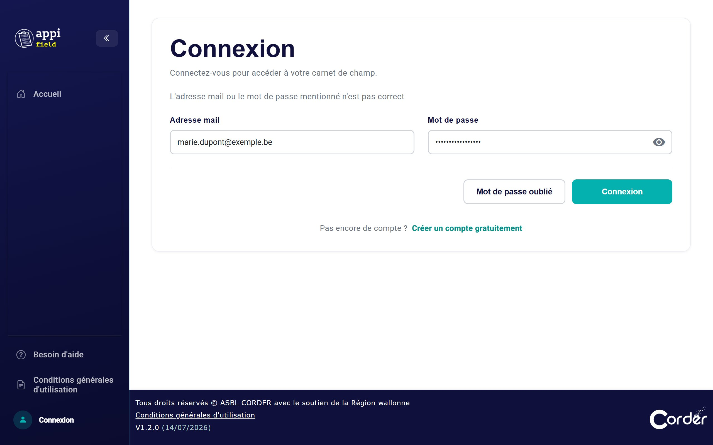
Le message quand l'adresse ou le mot de passe est incorrect.
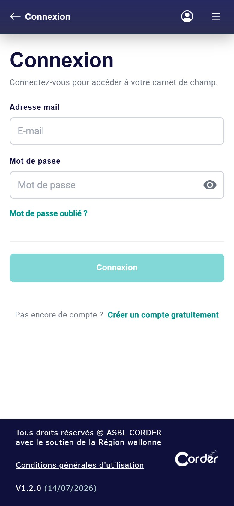
La page de connexion sur smartphone.
« L'adresse mail ou le mot de passe mentionné n'est pas correct »
Vérifiez l'adresse mail : une lettre en trop ou en moins suffit à bloquer.
Le mot de passe, lui, fait la différence entre majuscules et minuscules. Vérifiez que la touche Verr. Maj (⇪) de votre clavier n'est pas allumée.
Cliquez sur l'œil pour voir ce que vous avez tapé.
Toujours bloqué ? Utilisez Mot de passe oublié.
Rester connecté, être déconnecté
Par sécurité, votre session ne dure pas indéfiniment. Quand elle se termine, Appi'Field vous ramène à la page d'accueil avec le bandeau jaune « Session expirée » : reconnectez-vous simplement.
Appi'Field vérifie aussi votre connexion toutes les 30 minutes. Si internet est coupé à ce moment-là, vous êtes déconnecté.
Ce qui était déjà enregistré est conservé. Un formulaire en cours, pas encore validé, est perdu : pensez à enregistrer au fur et à mesure.
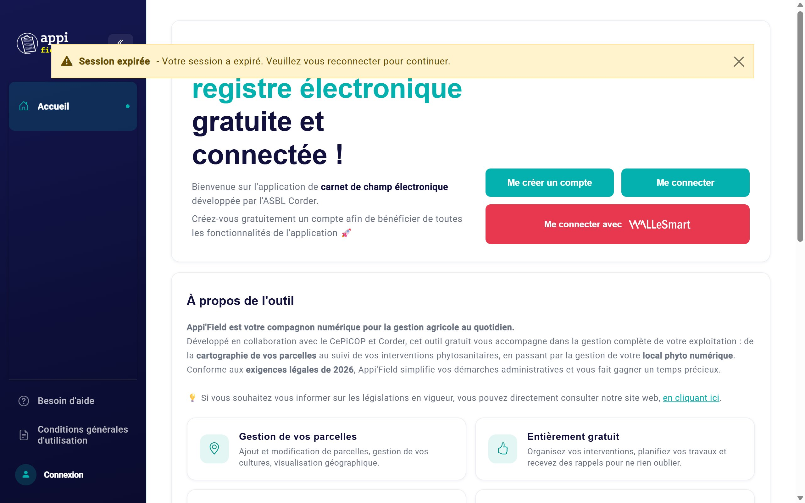
Le bandeau « Session expirée ». La croix à droite le ferme.
Se déconnecter
Sur ordinateur : l'icône rouge de sortie, à côté de votre nom, en bas du menu de gauche. Sur smartphone : Plus › Déconnexion.
Ordinateur partagéSur un ordinateur que d'autres personnes utilisent, déconnectez-vous toujours en partant : sinon, la personne suivante aura accès à votre carnet de champ.
Mot de passe oublié
Sur la page de connexion, cliquez sur Mot de passe oublié.
Tapez l'adresse mail de votre compte, puis cliquez sur Envoyer le lien.
Vous recevez un code de récupération par mail. Tapez-le, puis cliquez sur Valider. Pas reçu ? Regardez dans les courriers indésirables, ou cliquez sur Renvoyer un mail.
Choisissez votre nouveau mot de passe (mêmes règles qu'à l'inscription), tapez-le deux fois, puis cliquez sur Enregistrer.
Connectez-vous avec ce nouveau mot de passe.
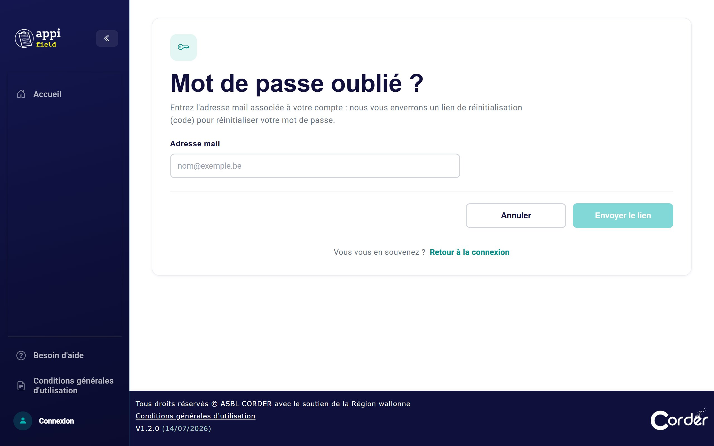
1. Votre adresse mail.
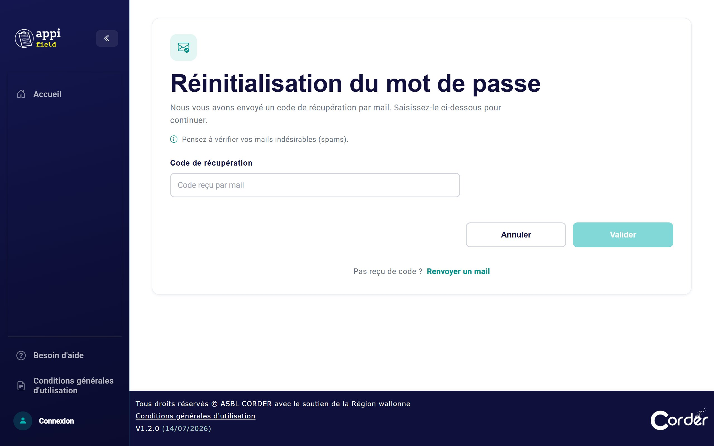
2. Le code reçu par mail.
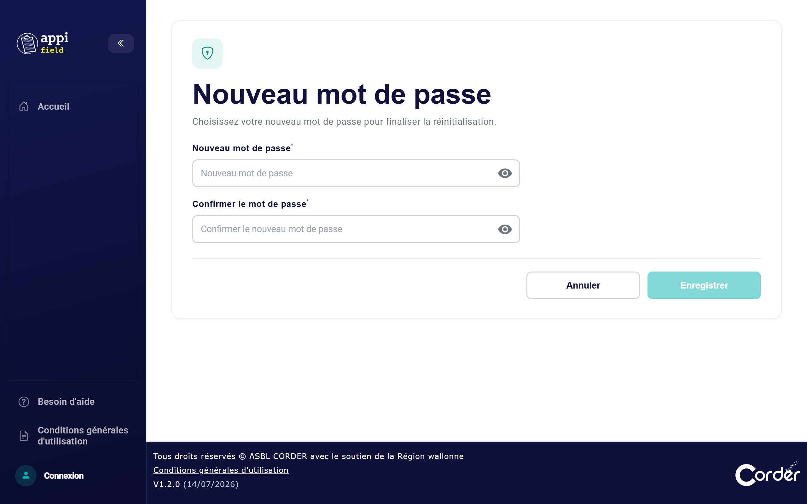
3. Le nouveau mot de passe.
Message
Que faire ?
« Le code de récupération que vous avez introduit n'est pas correct »
Vérifiez le code, et utilisez celui du dernier mail reçu.
« Le serveur ne répond pas. Veuillez réessayer dans quelques instants. »
Vérifiez votre connexion internet, attendez une minute et réessayez.
Vous êtes connecté et voulez simplement changer de mot de passe ? Passez par Mon compte › Modifier mon mot de passe (chapitre 12).
Se connecter avec WalleSmart
Si vous utilisez déjà le portail WalleSmart (WES), vous pouvez y ouvrir Appi'Field directement, sans retaper votre mot de passe. Il faut d'abord lier vos deux comptes, une seule fois.
Lier vos comptes (une seule fois)
Connectez-vous à Appi'Field comme d'habitude.
Allez dans Mon compte › WalleSmart.
Cliquez sur Lier mon compte WalleSmart : le portail WalleSmart s'ouvre dans un nouvel onglet. Suivez ses indications.
Revenez dans Mon compte › WalleSmart : le message « Votre compte est déjà lié à un compte WalleSmart » confirme la liaison.
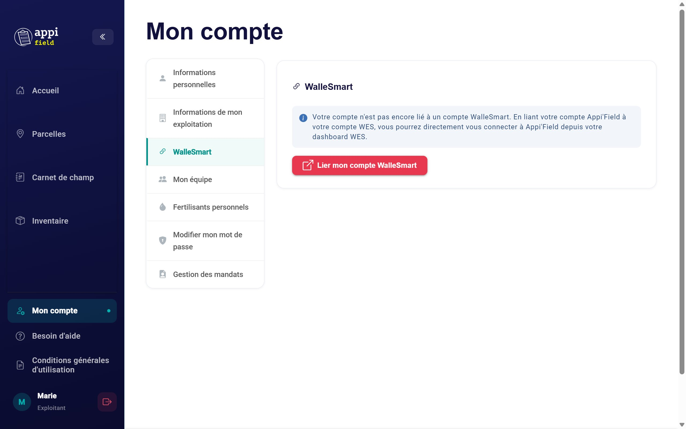
Mon compte › WalleSmart, avant la liaison.
La même adresse mailLa liaison se fait par votre adresse mail : utilisez la même dans Appi'Field et dans WalleSmart.
Ensuite, à chaque fois
Ouvrez votre tableau de bord WalleSmart et cliquez sur Appi'Field : l'application s'ouvre, déjà connectée. Depuis la page d'accueil d'Appi'Field, le bouton Me connecter avec WalleSmart ouvre lui aussi le portail WalleSmart. Si un message « Token invalide ou expiré » s'affiche, repassez par WalleSmart ou connectez-vous avec votre mot de passe.
Questions fréquentes sur l'inscription et la connexion
Le bouton « S'inscrire » reste pâle alors que tout est rempli.
Le plus souvent, c'est le mot de passe : il lui manque un chiffre ou un deuxième caractère spécial. Cliquez dans le champ Mot de passe pour voir la liste des règles. Vérifiez aussi la case des conditions générales.
Je n'ai pas reçu le code de validation.
Regardez dans les courriers indésirables. Après 1 heure, le code expire : recommencez l'inscription avec la même adresse.
Je n'ai pas de numéro de TVA.
Laissez le champ vide, il est facultatif.
Je me suis trompé dans mon nom ou mon numéro de phytolicence.
Corrigez-les dans Mon compte › Informations personnelles.
Ma phytolicence a été renouvelée.
Un renouvellement peut donner un nouveau numéro. Mettez-le à jour dans Mon compte (votre numéro) et dans Mon équipe (celui de l'opérateur).
Je voudrais changer l'adresse mail de mon compte.
L'adresse mail n'est pas modifiable dans l'application. Contactez le support (chapitre 15).